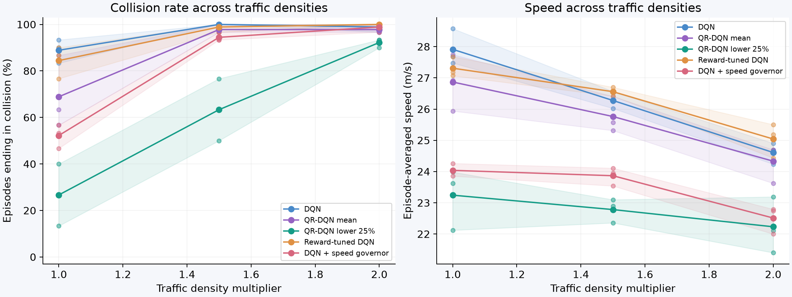
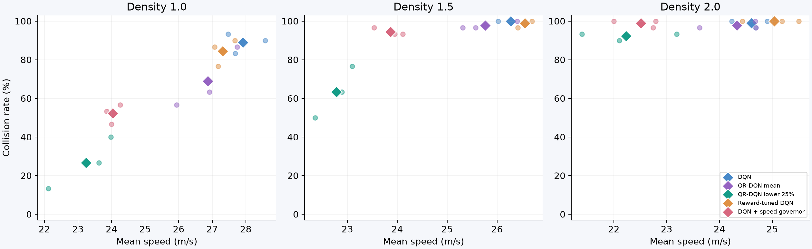
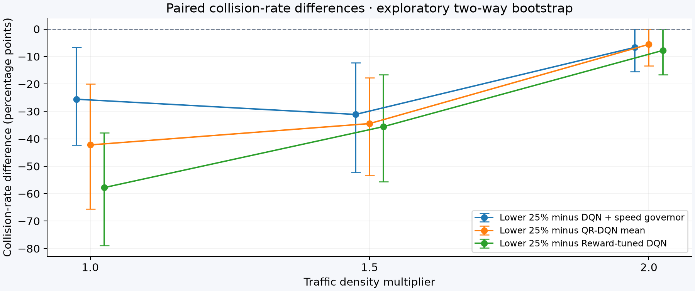
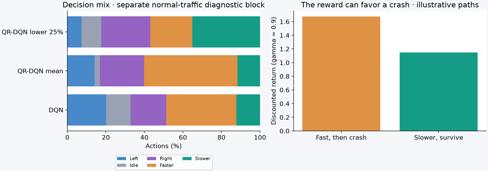
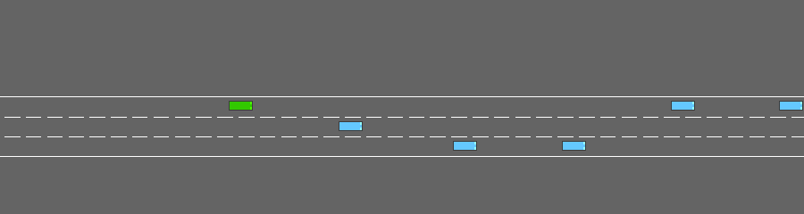

DEEP REINFORCEMENT LEARNING / DEVELOPMENT EXPERIMENT
Can a cautious return selector make deep RL driving safer?
Three independent training seeds, a stronger scalar baseline, and paired evaluations separate a promising first run from a repeatable result.
42.2 pp
fewer normal-traffic collisions vs QR-DQN mean
13.5% slower
normal-traffic speed cost of the cautious selector
3 training seeds
20,000 interactions per model · 30 scenarios per density
Development evidence. No final confirmation scenarios have been used. All learned methods are evaluated with the same reward. The scalar baseline was selected for speed closeness using development data; actual residual speed differences are reported. Three training seeds give limited evidence of robustness.
Compare the policies
Equal-weight averages across trained models. Ranges show the three training-seed estimates; they are not confidence intervals. Each model sees the same 30 scenario seeds at each density.

Lines: seed means. Dots: individual trained models. Shading: minimum to maximum across the three training seeds.
Does the advantage survive stronger controls?
Reward-tuned DQN uses a training collision penalty of -4, selected only for proximity to the cautious seed-0 policy's normal-traffic speed. Its seed-0 speed mismatch is +3.55 m/s. Selection used neither collision rate nor the other training seeds. This is speed targeting, not an exact speed match.
The additional observation-based governor uses a 26 m/s threshold, selected from 22, 24 and 26 m/s for seed-0 speed closeness. Its seed-0 mismatch is +0.23 m/s. This exploratory control was added after reward tuning failed to match speed. It uses only ego velocity from the same observation and adds no training.

Small dots: individual models. Diamonds: seed averages. Lower collision rate and higher speed are preferable; a faster policy and a safer policy can trade places without either dominating.

Negative differences favor the cautious selector on collisions. Intervals use 5,000 two-way bootstrap replicates over training seeds and shared scenario seeds while retaining policy pairing. With only three trained models, treat these intervals as exploratory.
What changed in the behavior?

The action trace uses separate development scenarios (11000–11029). Gap and time-to-collision measurements use privileged simulator state for diagnosis only. They never enter the learned policy.
The reward illustration compares nine rewards of 0.4 followed by a -2 crash against thirty rewards of 0.12 without a crash. At gamma 0.9 the first path has higher discounted return. This demonstrates an objective-design issue; it does not establish the cause of a particular failure.
Replay the same initial scenario
Training seed 0, scenario seed 10000, normal traffic. These rollouts were selected by seed before inspecting outcomes.
Mean-return QR-DQN

Cautious QR-DQN

Reward-tuned DQN

DQN + speed governor

Inspect every training-seed result